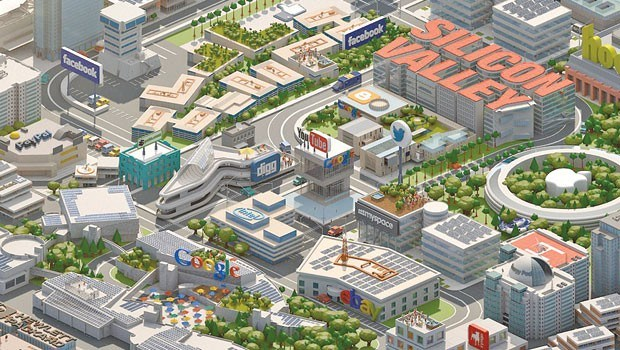
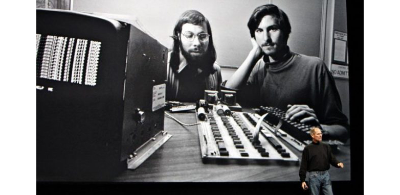
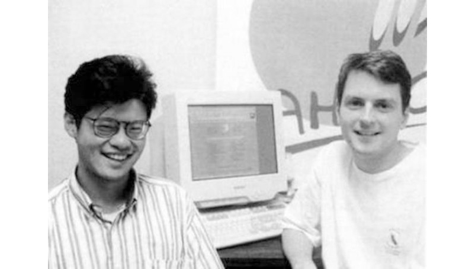

Orijinal ismi “Silicon Valley” olan büyük teknoloji şirketlerine ev sahipliği yapan vadi, Amerika Birleşik Devletleri’nin Kaliforniya eyaletindeki San Francisco Vadisi‘nin içerisinde bulunuyor. Vadide içlerinde Türk şirketlerinin de bulunduğu birçok büyük şirketin araştırma ve geliştirme merkezleri bulunmaktadır.
Dünyanın teknoloji merkezi olarak değerlendirilen Silikon Vadisi, Güney Kaliforniya’daki San Francisco Vadisi’nin bir parçası olan San Jose Vadisi’ne verilen isimdir. Bu ismin sebebi ise, bölgede önceleri yoğun olarak üretim ve geliştirme faaliyetinde bulunan silikon çip üreticileridir. Sonradan ise yüksek teknoloji ile ilgili sektörleri ifade etmek için kullanılan bir deyim olmuştur .
Silikon Vadisi; üniversitelerin, teknoloji devlerinin ve araştırma kuruluşlarının bir araya geldiği dev bir teknoloji bölgesidir. Daha çok tasarım ve mühendislik vadisi diye de anılmaktadır. Vadi araştırma ve geliştirme faaliyetlerinin, ileri teknolojinin ve elektroniğin en yoğun şekilde kullanıldığı alan olup amaç yarı iletken teknolojilerin geliştirilmesidir. Uluslararası teknolojik firmaların merkezi burasıdır.
Silikon Vadisi’nin tarihi gelişimi Stanford Üniversitesi‘nin kuruluşuyla başlıyor diyebiliriz. Bölgede bulunan zengin altın yatakları ve üretime dayalı çalışmalar, girişimcileri Kaliforniya eyaletinin kuzeyinde yer alan San Jose Vadisi‘ne çekmeyi başarmıştı. Bu gelişmeler Vali Leland Stanford’u harekete geçirdi. 1891 yılında “Özgürlük havası esiyor.” sloganı altında tam ismiyle Leland Stanford Junior Üniversitesi olan Stanford Ünivetsitesi’ni kurdu. Günümüzde dünyanın en büyük bütçesine sahip 3 üniversitesinden biri konumuna gelen Stanford Üniversitesi; HP, Cisco, Google, Yahoo! gibi dünya devlerinin de çıkış noktası.
 Stanford Üniversitesi’nin Silikon Vadisi’ne kazandırdığı ilk değer ise Bill Hewlett ve David Packard oldu. Bill Hewlett ve David Packard, üniversiteden mezun olduktan kısa bir süre sonra üniversitenin yakınlarındaki bir garajda HP şirketini kurdular. Sonrasındaki büyük patlama ise Stanford Üniversitesi dekanı sayesinde gerçekleşti. Stanford Üniversitesi dekanı, üniversite çevresinde bulunan boş arazileri teknoloji alanında çalışmalar yapan girişimcilere sattı. Bu girişimciler arasında günümüzün dünya devleri arasında bulunan Kodak gibi şirketler yer almaktaydı.
Silikon Vadisi’ni taçlandıran girişimciler ise ilk yarı iletken transistörü icat eden William Shockley, John Bardeen ve Walter Brattain oldu. 1956 yılında ortaya koyulan bu icat, Silikon Vadisi’ndeki William Shockley, John Bardeen ve Walter Brattain üçlüsüne Nobel Fizik ödülü kazandırdı.
1957 yılında yaşanan bir gelişme ise Silikon Vadisi’nde teknolojinin ne kadar hızlı ilerlediğini göstermekteydi. Hain Sekizli olarak bilinen Jean Hoerni, Julius Blank, Victor Grinich, Eugene Kleiner, Gordon Moore, Sheldon Roberts, Jay Last, Robert Noyce; yarı iletken transistörü bir adım daha öteye taşıdılar. Daha sonrasında bu Hain Sekizli’den ayrılan Robert Noyce ve Gordon Moore, 1968 yılında Intel firmasını kurdular.
Intel’in kurulması birçok şeyin de önünü açmıştı. Silikon Vadisi‘ndeki rekabet iyice kızışmış. Mucitler var gücüyle teknolojik çalışmalarını sürdürmeye çalışıyordu. Intel bu çalışmaların meyvesini 1971 yılında ürettiği ilk mikroişlemci olan Intel 4004 ile aldı. Bir yıl sonra ise LAN teknolojisini üreten Intel, ipleri yavaş yavaş eline almaya başladı.
1976‘da bir dev daha doğdu Steve Jobs ve Steve Wozniak isimli iki genç Silikon Vadisi yakınlarındaki Cupertino’da Apple‘ı kurdu. İlk bilgisayarlarını burada satmaya başlayan Apple, günümüzde teknoloji zirvesinin ortaklarından.
Takvim yaprakları 1994 yılını gösterdiğinde Stanford Ünivertsitesi öğrencilerinden Jerry Yang ve David Filo, Yahoo! arama motorunu geliştirdi. 1995 yılında şirket haline gelen Yahoo! zamanla elektronik posta alanında da kendini geliştirdi.
1998 yılında Yahoo!’ya bir rakip doğdu. Sergie Prin ve Larry Page adında iki genç Google‘ı kurdu ve zirveye yerleşti.
Yakın tarihe gelecek olursak 2004 yılında internet dünyasına merhaba diyen Facebook‘un kurucusu Zuckerberg de Silikon Vadisi’nin yolunu tutanlar arasındaki yerini almayı başardı.
Dünyanın en zeki mühendislerinin bulunduğu Silikon Vadisi’nde sosyal hayat ve teknolojiyi bir arada görmek mümkün. Şirketlerin çalışma alanları ve olanakları üst düzey. Spor salonları, oyun ve aktivite alanlarıyla Silikon Vadisi’nde mühendisler çalışırken eğlenmeyi de başarıyor. Bununla beraber büyük bir teknolojik savaş da boy gösteriyor. Şirketler arasındaki mücadele oldukça büyük.
Mühendisler ise bu mücadeleden büyük kazançlar elde ediyor. Silikon Vadisi’nde sözleşmeli mühendis çalışmıyor diyebiliriz. Çünkü yarın hangi mühendisin hangi firmaya gideceği bilinmez. Bir mühendisinin aylık geliri ise ortalama 100.000$.
| Sıralama | Firma Adı | Sektör |
|---|---|---|
| 1 | Apple | IT – Tüketici |
| 2 | Web | |
| 3 | Oracle | IT – Kurumsal |
| 4 | Intel | Semiconductor |
| 5 | Cisco Systems | IT – Kurumsal |
| 6 | eBay | IT – Tüketici |
| 7 | VMware | IT – Kurumsal |
| 8 | Hewlett-Packard | IT – Kurumsal |
| 9 | Gilead Sciences | Sağlık |
| 10 | Intuitive Surgical | Sağlık |
| 11 | Salesforce.com | IT – Kurumsal |
| 12 | Yahoo! | Web |
| 13 | Intuit | IT – Tüketici |
| 14 | Adobe Systems | IT – Tüketici |
| 15 | NetApp | IT – Kurumsal |
| 16 | Applied Materials | Semiconductor ve Yan Sanayi |
| 17 | Agilent Technologies | IT – Kurumsal |
| 18 | Symantec | IT – Tüketici |
| 19 | Altera | Semiconductor |
| 20 | Juniper Networks | Network ve Telekomünikasyon |
| 21 | SanDisk | Semiconductor |
| 22 | Web | |
| 23 | Xilinx | Semiconductor |
| 24 | Zynga | Eğlence |
| 25 | Nvidia | Semiconductor |
| 26 | KLA-Tencor | Semiconductor ve Yan Sanayi |
| 27 | Maxim Integrated Products | Semiconductor |
| 28 | Varian Medical Systems | Sağlık |
| 29 | Linear Technology | Semiconductor |
| 30 | Equinix | Network ve Telekomünikasyon |
| 31 | Trimble Navigation | IT – Kurumsal |
| 32 | Netflix | Eğlence |
| 33 | Informatica | IT – Kurumsal |
| 34 | Advanced Micro Devices | Semiconductor |
| 35 | VeriFone Systems | IT – Kurumsal |
| 36 | Electronic Arts | Eğlence |
| 37 | Lam Research | Semiconductor ve Yan Sanayi |
| 38 | Tibco Software | IT – Kurumsal |
| 39 | LSI | Semiconductor |
| 40 | Synopsys | Semiconductor |
| 41 | Atmel | Semiconductor |
| 42 | Riverbed Technology | Network ve Telekomünikasyon |
| 43 | Fortinet | Network ve Telekomünikasyon |
| 44 | Dolby Laboratories | Eğlence |
| 45 | Tesla Motors | Çevreci Teknoloji |
| 46 | Rovi | Eğlence |
| 47 | Novellus Systems | Semiconductor ve Yan Sanayi |
| 48 | NetSuite | IT – Kurumsal |
| 49 | Polycom | Network ve Telekomünikasyon |
| 50 | JDS Uniphase | Network ve Telekomünikasyon |
| 51 | Ariba | IT – Kurumsal |
| 52 | Cadence Design Systems | Semiconductor |
| 53 | Ubiquiti Networks | Network ve Telekomünikasyon |
| 54 | Cepheid | Sağlık |
| 55 | Brocade Communications | IT – Kurumsal |
| 56 | Aruba Networks | Network ve Telekomünikasyon |
| 57 | Cypress Semiconductor | Semiconductor |
| 58 | Onyx Pharmaceuticals | Sağlık |
| 59 | Align Technology | Sağlık |
| 60 | Thoratec | Sağlık |
| 61 | Fairchild Semiconductor | Semiconductor |
| 62 | Finisar | Network ve Telekomünikasyon |
| 63 | Pandora Media | Eğlence |
| 64 | PMC – Sierra | Semiconductor |
| 65 | Impax Laboratories | Sağlık |
| 66 | Cavium | Semiconductor |
| 67 | Tivo | Eğlence |
| 68 | InvenSense | Semiconductor |
| 69 | Netgear | IT – Tüketici |
| 70 | Intersil | Semiconductor |
| 71 | Synnex | IT – Kurumsal |
| 72 | Coherent | IT – Kurumsal |
| 73 | Advent Software | IT – Kurumsal |
| 74 | Synaptics | IT – Kurumsal |
| 75 | ServiceSource | IT – Kurumsal |
| 76 | Shutterfly | Web |
| 77 | Power Integrations | Semiconductor |
| 78 | Omnivision Technologies | Semiconductor |
| 79 | Integrated Device Technology | Semiconductor |
| 80 | iGate | IT – Kurumsal |
| 81 | Sanmina-SCI | IT – Kurumsal |
| 82 | OpenTable | IT – Tüketici |
| 83 | Genomic Health | Sağlık |
| 84 | Tessera Technologies | Semiconductor |
| 85 | Infinera | Network ve Telekomünikasyon |
| 86 | Volterra Semiconductor | Semiconductor |
| 87 | Exelixis | Sağlık |
| 88 | Electronics for Imaging | IT – Kurumsal |
| 89 | Ultratech | Semiconductor ve Yan Sanayi |
| 90 | SunPower | Çevreci Teknoloji |
| 91 | Spansion | Semiconductor |
| 92 | Rambus | Semiconductor |
| 93 | Super Micro Computer | IT – Kurumsal |
| 94 | Monolithic Power Systems | Semiconductor |
| 95 | Harmonic | Network ve Telekomünikasyon |
| 96 | Abaxis | Sağlık |
| 97 | Micrel | Semiconductor |
| 98 | Quantum | IT – Kurumsal |
| 99 | Leapfrog Enterprises | IT – Tüketici |
| 100 | Responsys | IT – Kurumsal |
| 101 | Omnicell | Sağlık |
| 102 | Accuray | Sağlık |
| 103 | Silicon Image | Semiconductor |
| 104 | QuinStreet | IT – Kurumsal |
| 105 | OCZ Technology Group | IT – Kurumsal |
| 106 | Conceptus | Sağlık |
| 107 | Nanometrics | Semiconductor ve Yan Sanayi |
| 108 | Applied Micro Circuits | Semiconductor |
| 109 | IXYS | Semiconductor |
| 110 | Exar | Semiconductor |
| 111 | Sciclone Pharmaceuticals | Sağlık |
| 112 | Extreme Networks | Network ve Telekomünikasyon |
| 113 | Natus Medical | Sağlık |
| 114 | Depomed | Sağlık |
| 115 | Keynote Systems | IT – Kurumsal |
| 116 | Oplink Communicationss | Network ve Telekomünikasyon |
| 117 | Actuate | IT – Kurumsal |
| 118 | Silicon Graphics | IT – Kurumsal |
| 119 | Integrated Silicon Solution | Semiconductor |
| 120 | Affymetrix | Sağlık |
| 121 | TeleNav | IT – Kurumsal |
| 122 | Saba Software | IT – Kurumsal |
| 123 | Formfactor | Semiconductor ve Yan Sanayi |
| 124 | ShoreTel | Network ve Telekomünikasyon |
| 125 | Callidus Software | IT – Kurumsal |
| 126 | Symmetricom | Network ve Telekomünikasyon |
| 127 | Alpha & Omega Semiconductor | Semiconductor |
| 128 | Epocrates | Sağlık |
| 129 | AXT | Semiconductor |
| 130 | Oclaro | Network ve Telekomünikasyon |
| 131 | Intevac | Semiconductor ve Yan Sanayi |
| 132 | Openwave Systems | Network ve Telekomünikasyon |
| 133 | Pericom Semiconductor | Semiconductor |
| 134 | Echelon | IT – Kurumsal |
| 135 | Solta Medical | Sağlık |
| 136 | PLX Technology | Semiconductor |
| 137 | Ultra Clean | Semiconductor ve Yan Sanayi |
| 138 | Sigma Designs | Semiconductor |
| 139 | Mattson Technology | Semiconductor ve Yan Sanayi |
| 140 | Ipass | Network ve Telekomünikasyon |
| 141 | DSP Group | Semiconductor |
| 142 | Opnext | Network ve Telekomünikasyon |
| 143 | Codexis | Çevreci Teknoloji |
| 144 | GSI Technology | Semiconductor |
| 145 | NeoPhotonics | Network ve Telekomünikasyon |
| 146 | Meru Networks | Network ve Telekomünikasyon |
| 147 | Trident Microsystems | Semiconductor |
| 148 | Ikanos Communicationss | Semiconductor |
| 149 | Zhone Technologies | Network ve Telekomünikasyon |
| 150 | Dialogic | Network ve Telekomünikasyon |